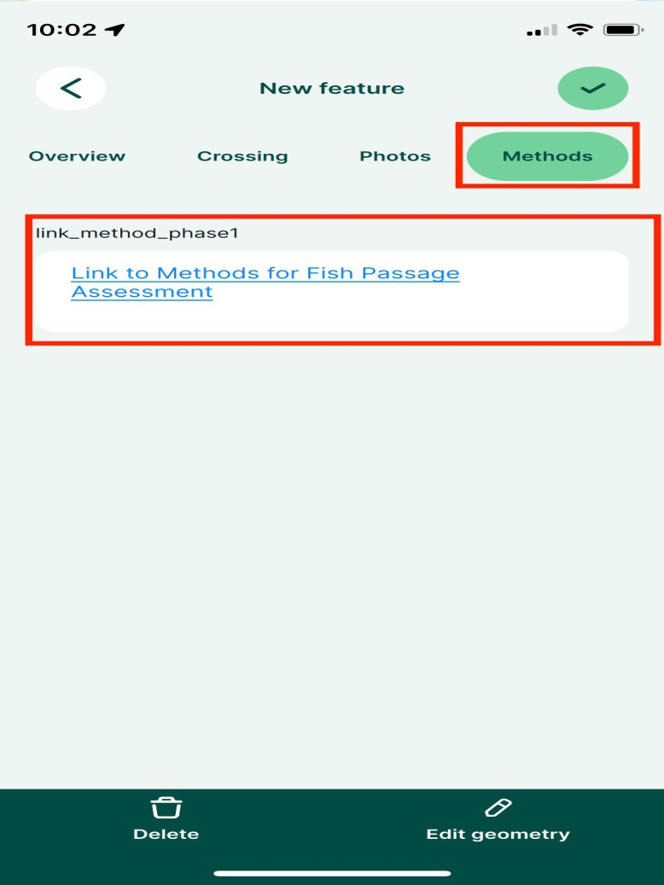
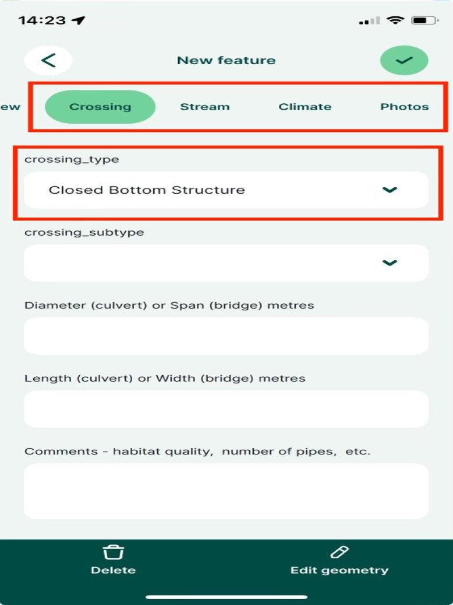
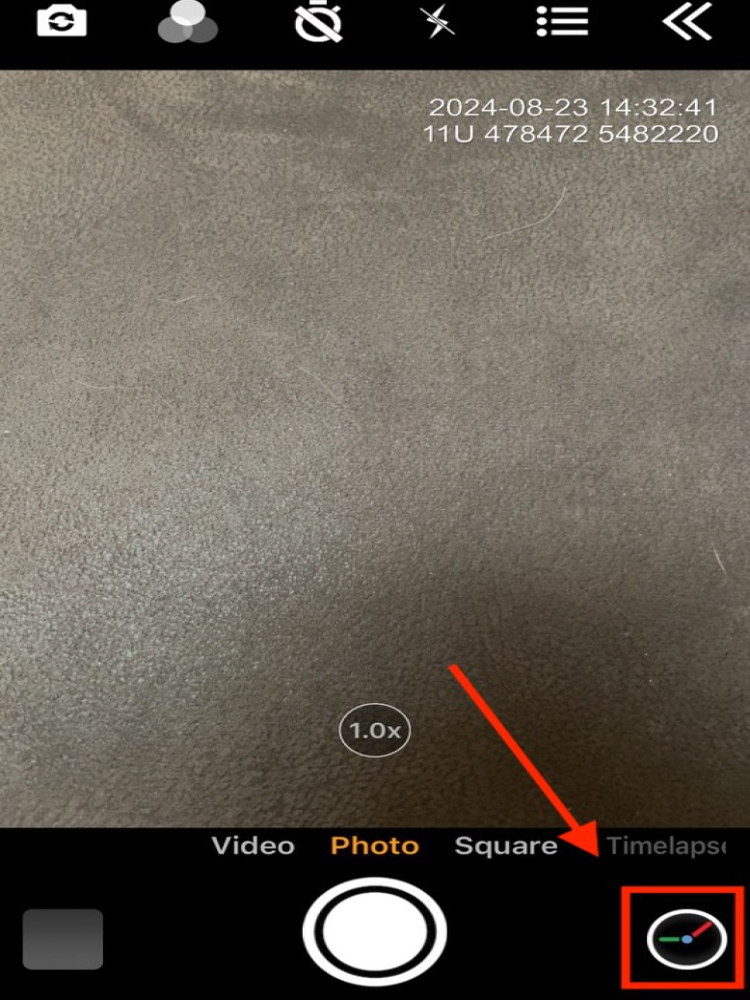
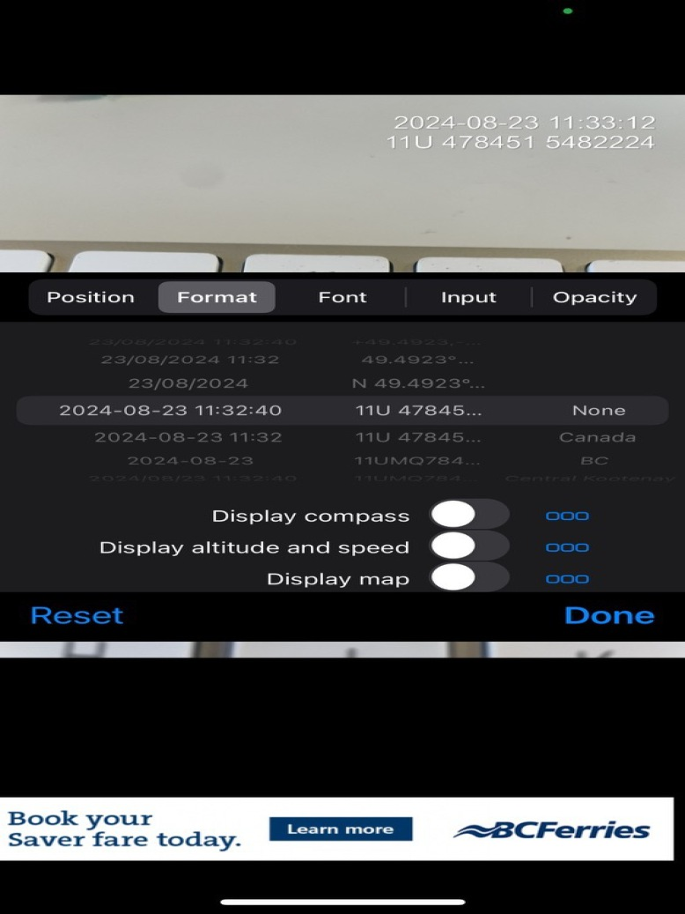
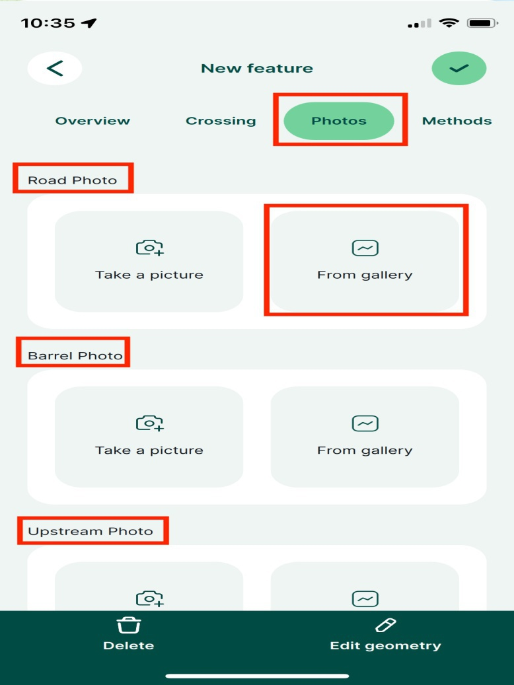
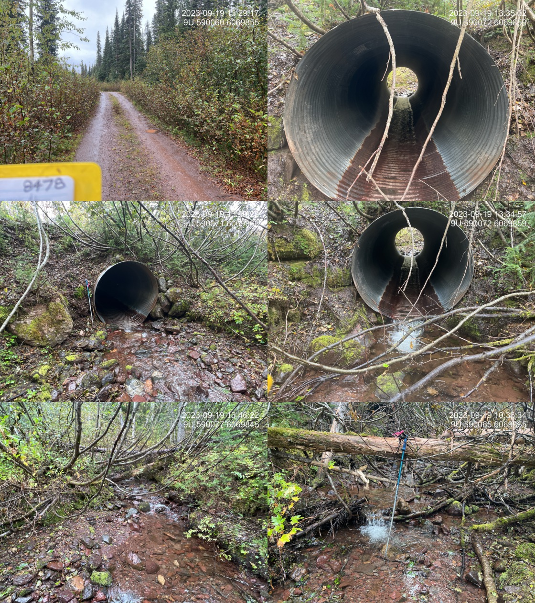
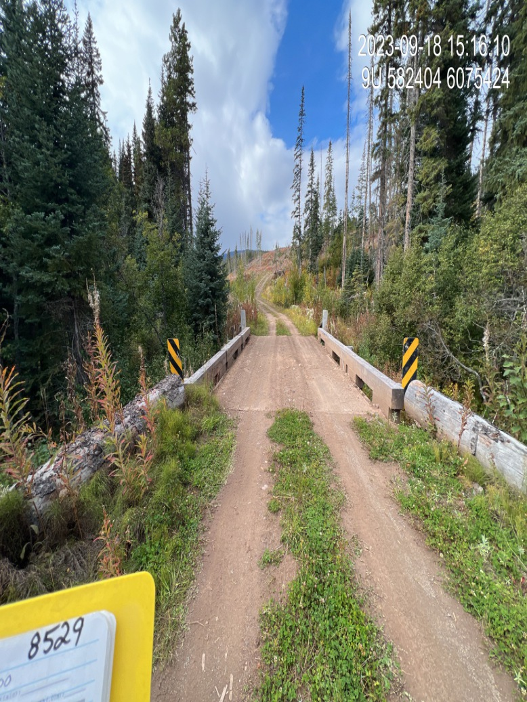
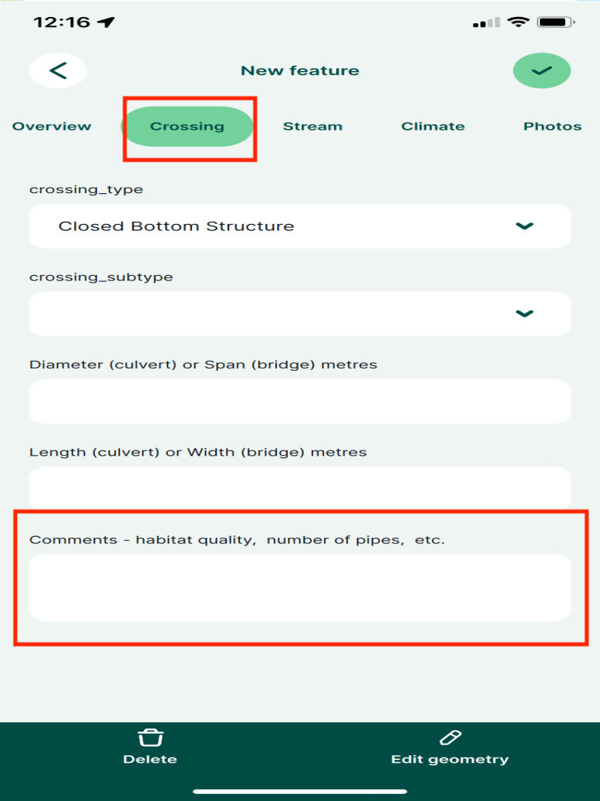
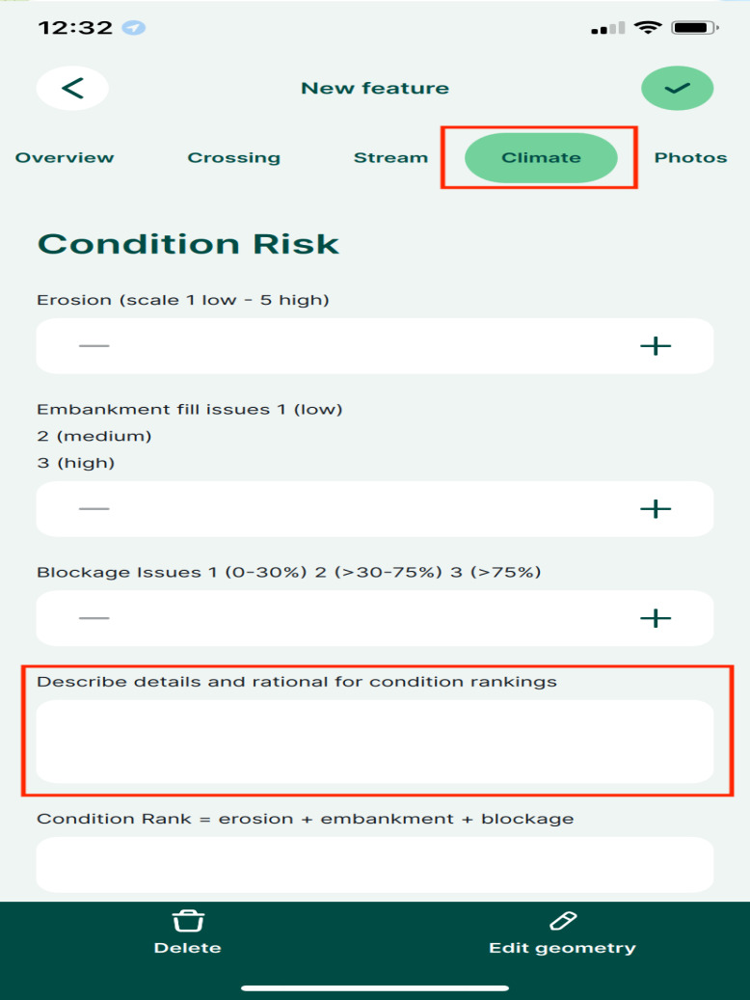

4 Data Collection and Field Navigation
4.1 Methods
Fish Passage
In the field, crossings are assessed for fish passage following the procedures outlined in Field Assessment for Determining Fish Passage Status of Closed Bottomed Structures (BC Ministry of Environment 2011).
We have developed a digital field form called Form PSCIS (an adapted version of the Field Assessment for Determining Fish Passage Status of Closed Bottomed Structures (BC Ministry of Environment 2011) that can and should be used to collect this data in the field. Our digital field form is our primary tool for data collection and contains a high level of detail, however its still undergoing development, so we are currently minimally populating a paper form as well to ensure we have the data in case of a digital failure.
In addition to the methods mentioned above, here are some important things to note when collecting data:
- When measuring channel width and stream gradient, take measurements upstream of crossing because this is the habitat that will be gained if remediation occurs. Take measurements outside of the road corridor, take the average of three channel widths and a slope in the longest possible section.
- When filling in the paper form, record crew members and circle the initials of the person who’s GPS was used to record the crossing location. This avoids confusion in the data management stage.
- For culvert crossings with multiple pipes installed at the same elevation at the outlet, add the diameters together and make a note in the comments that it was 2 pipes. Don’t add the diameters together if the second pipe is an overflow pipe, which is usually installed above the main culvert in case of an overflow event. This is because the diameter of the pipes is used to estimate the crossings flow capacity under normal conditions, not during an overflow or flood event.
- If there are associated
MoTi Chris Culvert IDs orMoTi Major structures(Ministry of Transportation and Infrastructure’s own culvert tracking system) we include those in theMoTi Chris Culvert IDfields, found in theOverviewsection of the form. To view these structures on the map, you can find theMoTi CulvertsandMoTi major structureslayers in theCrossingsgroup, which can be turned on with theHigh Detail - Crossingstheme or by hand. TheMoTi Culvertslayer can be helpful for finding crossings that land in spots not located as mapped. - If the crossing is an obvious barrier and the stream habitat appears high value, make a note that this location could be a high priority for follow up and a habitat confirmation.
Always collect all the information, including the photos, so that we have what we need. If you don’t collect some information then write in the assessment comments why it is missing. For example, if you cannot see the inlet of the culvert, take a picture of what you can see and upload it to Mergin then explain in the assessment comments that the inlet was not visible. Same with fields you are not sure of, fill everything out and put details in the assessment comments of what is going on.
There is a link to the Field Assessment for Determining Fish Passage Status of Closed Bottomed Structures (BC Ministry of Environment 2011) methods in the digital field form so you can easily access them while in the field if you have cell service (Figure 4.1).

Figure 4.1: The methods used for fish passage assessments can be found in the ‘Form PSCIS’ under ‘Methods’
Habitat Confirmations
When a site looks like a promising candidate for replacement, we will do a more thorough assessment called a Habitat Confirmation following the guidelines outlined in A Checklist for Fish Habitat Confirmation Prior to the Rehabilitation of a Stream Crossing (Fish Passage Technical Working Group 2011a).
We use our digital field form called Form Fiss Site to record habitat data, which is an adapted version of the FISS Site Card (Ministry of Environment 2001) and includes methods from the FISS Site Card Field Guide (Ministry of Environment 2008). In addition to the above methods, here are some important things to note when conducting a Habitat Confirmation:
- In the
Form Fiss SiteunderSite Name, record thePSCIS Crossing IDorModelled ID(see Site Identification to determine which one) followed by an underscore andusords, indicating if the survey was done upstream or downstream of the crossing (ex:12345_us). - Ensure at least three wetted and channel widths are taken, but aim for 5-6.
- Using your GPS, mark a waypoint at the bottom of your site and record the site length by measuring the distance between the start and end of survey.
- Survey upstream of crossing for a minimum of 600m, and downstream a minimum of 300m.
- Take lots of photos using Timestamp. Photograph features/obstacles if present, gravels, pools, or any other photos of the stream that will help tell the story. Put a walking pole in your picture to help get an idea of the scale. Include your boot in gravel pictures for scale.
- Make sure to record comments regarding:
- stream habitat
- presence of natural barriers
- fish sightings
- presence of spawning gravels
- presence of deep pools
Fish Sampling
Fish sampling is conducted at sites when biological data is considered to add significant value to the physical habitat assessment information. We use the Form Fiss Site at fish sample sites to record habitat data. Additionally, we also fill out a paper Fish Site card to record electrofisher settings and individual fish information.
Most often we utilize electrofishing for fish sampling and follow the standards and procedures found in Fish Collection Methods and Standards (Resources Inventory Committee 1997) and Reconnaissance (1:20 000) Fish and Fish Habitat Inventory Manual (Resources Inventory Committee 2001).
We use the Field Key to Freshwater Fishes of BC (McPhail and Carveth 1993) to identify fish.
In the Form Fiss Site, here are some things to take note of:
- In the form under
Site Name, record thePSCIS Crossing IDorModelled ID(see Site Identification to determine which one) followed by an underscore andusordsand_ef#indicating if the site is upstream or downstream and what the sample site number is (ex:12345_us_ef1). - Fill out a new
Form Fiss Siteand paper habitat site card for every electrofishing site. At minimum, the following data should be recorded at each site:- site start and end locations (with GPS and flagging tape)
- site length
- water quality (temperature, conductivity, turbidity, and pH)
- stream wetted widths (at least 3)
- habitat comments
On the paper Fish Site card:
- Record the electrofisher settings, including the voltage, frequency, and seconds elapsed during each sample site.
- Record if the site was enclosed (stop nets at boths ends), partially enclosed (stop net at one end), or open (no stop nets).
- For each fish, record the species, fork length in millimeters, and weight.
- Most fish that are over 60mm long also get a PIT tag, see the section below on PIT Tagging. When recording the
PIT tag ID, record the complete tag ID for the first fish and then only record the last 3 digits/letters for the rest. This is because only the last 3 digits/letters change within the same box of tags, so we can save time by just recording the last 3. When you open a new box of PIT tags, don’t forget to record the complete tag number again!
- Also record the PIT
tag row IDfor each fish. - Take photos of fish using the Timestamp app, and record the exact time of the photo on the Fish Site card. This will make it easier to identify fish later on. If unable to identify the species, it is important to take a photo and review field id guides later.
PIT Tagging
Fish with a fork length greater than 60 mm and belonging to species approved under the scientific fish collection permit for the given project are tagged with Passive Integrated Transponders (PIT tags) using the Abdominal Cavity method outlined by Biomark.
Pit tagging can be harmful to fish if done incorrectly. We want to do our best job so fish get tagged as safely as possible. Please read these instructions thoroughly:
To anesthetize fish prior to pit tagging, we use a solution of approximately 0.1 mL of clove oil per 1 L of water (1:10,000). This concentration was selected for its efficiency in providing effective sedation with minimal residual effects, making it ideal for studies in which fish are released back into their natural habitats (Fernandes et al. 2017). The clove oil solution should be prepared in advance by dissolving pure clove oil in ethyl alcohol in a 1:9 ratio (clove oil: ethyl alcohol) to enhance solubility, then mixed into the water bucket (Fernandes et al. 2017).
Place fish into the bucket with clove until they have reached an appropriate level of anesthesia for handling. Be mindful of how long the fish remain in the clove bucket. If you have a large number of fish, only place half or a third of them in the bucket at a time, or even fewer if you’re still learning to tag fish and need extra time.
Ensure the needle is loaded with a tag before grabbing the fish, then insert the PIT tag following the instructions outlined in the Abdominal Cavity methods. Be very careful when handling the needle. Do not insert the needle too deep, but ensure the tag is inserted parallel to the body of the fish, just underneath the skin.
After tagging the fish, scan it with the PIT reader, and record the last 3 digits/letters of the
PIT tag IDand the completetag row ID.Finally, place the fish into a bucket of fresh water where they can recover before being released back into the stream.
Change out needles roughly every 10 fish, they will wear out and it will become more difficult to penetrate the skin, potentially causing injury to the fish.
4.2 Digital Field Forms
We have developed several digital field forms that can and should be used to collect data in the field. The digital field forms are our primary tool for data collection and contains a high level of detail, however they are still undergoing development, so we are currently minimally populating a paper form as well to ensure we have the data in case of a digital failure.
Our digital field forms are built with QGIS and accessed through Mergin Maps, which is a geodata platform that allows us to collaborate with others by collecting data in the field and syncing to a shared QGIS project (MerginMaps 2023). We also use the Mergin Maps app to view QGIS projects while in the field which allows us to locate sites and understand watershed/land values. Check out the Mergin Maps documentation for more information.
We currently have 3 digital field forms:
Form PSCISis used to for Fish Passage assessment data collectionForm FISS Siteis used for Habitat Confirmations and Fish Sampling site data collectionForm Monitoringis used for Monitoring data collection (currently only found in certain project)
Once downloaded to a phone - wifi or cell service is not required to view maps and collect data. Also of note - it is not required to have the project downloaded on a laptop to see/use them on the phone - only a Mergin account with access to the newgraph workspace is necessary.
Set up
Setting up Mergin Maps on a phone requires a wifi or cell connection:
- Download the Mergin Maps app from the App Store (Apple) or Google Play (Android) following the instructions here.
- Sign up for a “free trial” account. We suggest a username with no spaces (or special characters like %$&) such as “newgraph_lschick” as it tells us a lot just by the name. If you have already made a username for github and it has no spaces or special characters perhaps you just want to use that one. Sign in if you have an existing account.
- It will require you to make a FREE trial workspace. Once this is complete you will be able to access the
newgraphworkspace at no cost (even beyond the end of the free trial period). - We will receive an invitation to join the
newgraphMergin workspace. - Switch to the
newgraphworkspace following these instructions.
Using Mergin on a Mobile Device
Although use in the field does not require wifi or cell service, there are actions that require an internet connection such as switching accounts, downloading projects from the cloud, synchronising changes to the cloud, and displaying online background maps (ex. google imagery). Use the following instructions to download your projects before you head out into the field!
Navigate to the
Projectstab following the instructions here.Download the project you want to view. You will need at least 2GB of storage on your phone to download a project. Once downloaded, tap the project name to open.
View the different themes available.
View the available layers. You will only see one layer visible,
bcfishpass Mobile, which contains all our layers grouped into categories. Clickbcfishpass Mobileto view the categories, such asCrossings,Forms,Project Specific. Some category contains sub-categories, so have a look around to see all the available layers. Toggle a layer to turn it on or off on the map. For example, if you want to make thestreams_stlayer visible, you would navigate throughbcfishpass Mobile→Streams→Habitat models→streams_stto toggle onstreams_st.Know how to exit a Project.
Field Data Entry into Mergin
Follow the instructions to add a feature to a specific layer and the
guidance below to add fish passage assessment data to Form PSCIS:
- Ensure you are at the location of the culvert before adding the feature to
Form PSCIS. - Tap
recordat the bottom of the screen. - Once the form appears you can enter the data. The form is divided into sections which you can see at the top of the screen. The
StreamandClimatesections will only become visible if you have selectedclosed bottom structurefor thecrossing_typebecause only closed bottom structures require that information. Navigate through each section to enter data. - Click the green check mark in the top right corner to save the feature.

Figure 4.2: The Stream and Climate sections will only become visible if you have selected closed bottom structure for the crossing type
While entering information save the form often as glitches can occur which can lead to loosing work.
When you are no longer offline, make sure to sync your changes to the online shared project.
When adding features (sites) to the project map, here are some things to take note of:
We find that Mergin works much better (faster rendering) with airplane mode on.
In addition to using the digital field forms (see above section), make sure to fill out the paper copies as well as in the past we have seen uncommon issues with syncing and data corruption.
Switching between themes can be very useful for seeing different levels of detail in the field. The most common theme when navigating to sites in the field is:
Low detail - {Species} Modelwith other more detailed themes (ex.High Detail - Crossings) used when researching background information for the site (ex. species upstream, MoTi Culvert ID)
Site Identification
- The identification of each site is important for workflow data processing and necessarily a bit complicated. It involves one of either
PSCIS Crossing IDor aModelled ID:
If a site has a
PSCIS Crossing ID(stream_crossing_idwithin theCrossings - PSCIS assessmentlayer) then that is used as the identifier.If there is no
PSCIS Crossing IDwe use theModelled IDwhich is themodelled_crossing_idfiled from theCrossings - modelledlayer.If there is neither a
PSCIS Crossing IDor aModelled ID(rare but usually occurs when a stream is not mapped correctly) we use a numeric ID based on the date (YYYYMMDD01 - example 2023070502 - would be the second assessment by a field surveyor for the day). It is important to not have duplicateModelled IDs so each surveyor should be assigned their own number series to append to the date for each day (ex. surveyor 1 has 1 - 49 and surveyor 2 has series 50 - 99).
Photos
Photos are one of the most important pieces of data we collect with the majority of which loaded to our digital field forms. The Timestamp Camera app is used to take photos (landscape only) in the field.
Ensure the current date and time and UTM coordinates are in top right corner of the Timestamp app. Navigate to the Timestamp settings by pressing the ‘clock’ icon in the bottom right corner when in the timestamp app.
knitr::include_graphics("fig/fieldwork/timestamp_settings_access.jpg")
knitr::include_graphics("fig/pixel.png")
knitr::include_graphics("fig/fieldwork/timestamp_settings.jpg")

Figure 4.4: Left: Navigate to the Timestamp settings by pressing the ‘clock’ icon in the bottom right corner when in the timestamp app. Right: Use these Timestamp settings.
Photos are taken at surveyed crossings and all SIX of the following images are always required: road, crossing inlet, crossing outlet, crossing barrel, channel downstream and channel upstream of the crossing (Figure 4.5). We encourage taking enough photos to have a good understanding of the site, 6 is just the minimum. These photos really come in handy when we are back in the office and need to recall the site.
The first photo you take should always be of the road with the PSCIS Crossing ID or the Modelled ID on the site card visible in the corner (or a photo of site card filled in with site name, date, stream name) (Figure 4.6). This allows for easier sorting of the photos later on back in the office.
Take photos on your camera first, then add them to the digital field form in the Photos sections of the form, following the instructions below:
- Navigate to the
Photossection of the digital field form - You will see a place to add each photo under the correct name (Ex:
Road photo,Barrel Photo, etc) - Add photos
From Gallery - Do not use the same photo for more than one section (Ex: Upstream photo and Inlet Photo) because this creates data management issues.
- Add any additional photos to the appropriate boxes, such as
photo_condition,photo_embankment_fill,photo_blockage, andphoto_extra1etc. - After filling in the paper card as backup, take a photo and add it to the
Photo - paper card from gallery for backupbox. This is helpful for QAing the data back in the office.
knitr::include_graphics("fig/fieldwork/photos_mobile.jpg")
knitr::include_graphics("fig/pixel.png")
knitr::include_graphics("fig/fieldwork/crossing_all.JPG")

Figure 4.5: Left: Under the correct heading (Road photo, Barrel Photo, etc), add each photo ‘From Gallery’ in the photos section of the digital field form, Right: Examples of six required pohtos. From top left clockwise: Road/Site Card, Barrel, Outlet, Downstream, Upstream, Inlet.

Figure 4.6: Example of road photo with either the PSCIS Crossing ID or the Modelled ID on the site card visible in the corner.
Below are some tips for taking proper photos:
- Use the Timestamp app with the correct settings and always orient camera landscape when taking photos. This is because of the way the photos are processed for reporting.
- Include something for scale. We use ski poles for safety navigating in slippery uneven streambeds and to measure depth so one of the poles can be used for scale in the photos. This can come in very handy for understanding stream and crossing structure characteristics just by reviewing the photos.
- It is important to let the Timestamp app “find” where you are before taking the first photos at a new site. It can take a few seconds for the app to zoom into the location where you are standing once it is opened.
- Closing the Timestamp app every time you use it will help your phone battery not drain.
Data Backups
Ensuring photos are stored and backed up appropriately in case anything goes wrong is very important. Additionally, we photograph all field cards (in the order that the cards were filled) at the end of each workday for backup purposes. These photos should be backed up in 3 places:
- On your phone in your photos app
- In Mergin in the digital field form for each site as explained in the Photos section
- On a cloud based service such as icloud or Google Photos, etc. You will likely have to pay for more storage to handle all the photos. Make sure you sync your photos to the cloud when are are back in service.
Make sure to sync your Mergin Maps as often as possible or whenever to get back into cell service.
4.3 Phone and Battery Management
- Your phone needs to be mounted on a secure mount on the dash of your vehicle so you can see the phone while driving.
- Always plug in your phone when driving so it can charge.
- Always carry an external battery pack so that you can charge your phone if it dies.
- Ensure your phone is in a quality case.
- Make sure you have enough storage available to take lots of photos!
4.5 Resources
- Field Assessment for Determining Fish Passage Status of Closed Bottom Structures - Methods for determining fish passage status of closed bottom structures (BC Ministry of Environment 2011).
A Checklist for Fish Habitat Confirmation Prior to the Rehabilitation of a Stream Crossing - Includes the methods used for Habitat Confirmation assessments (Fish Passage Technical Working Group 2011b).
FHAP Procedures - Standards for Reconnaissance (1:20 000) Fish and Fish Habitat Inventory for British Columbia. These methods are much more detailed and are typically used when there is significantly more time available to collect data (Resource Inventory Standards Committee 2001).
FISS Site Card - Site card used for fish habitat data collection (Ministry of Environment 2001).
FISS Card Methods - Site card methods for fish and fish habitat inventory (Ministry of Environment 2008).
Fish Collection Methods and Standards - Includes procedures for electrofishing and minnowtrapping (Resources Inventory Committee 1997).
Field Key to the Freshwater Fishes of BC - The fish ID guide we currently use (McPhail and Carveth 1993).
Comments
It’s important to write detailed comments regarding the habitat in the
Comments - habitat quality, number of pipes, etc.box found in theCrossingsection of the form (Figure 4.3). Comments should include everything that will help characterize the site and justify the habitat ratings given by the surveyor. Some example are:There are also comment boxes in the
Climatesection of the form which are for climate-related notes regarding the condition of the crossing as well as the climate change risk and priority (Figure 4.3). These comments are separate from habitat comments mentioned above and used for different purposes in the reporting phase so make sure to not mix these up.

Figure 4.3: Left: Place to write detailed comments regarding the habitat in the
Crossingsection of the form. Right: Place to write climate-related comments in theClimatesection of the form.